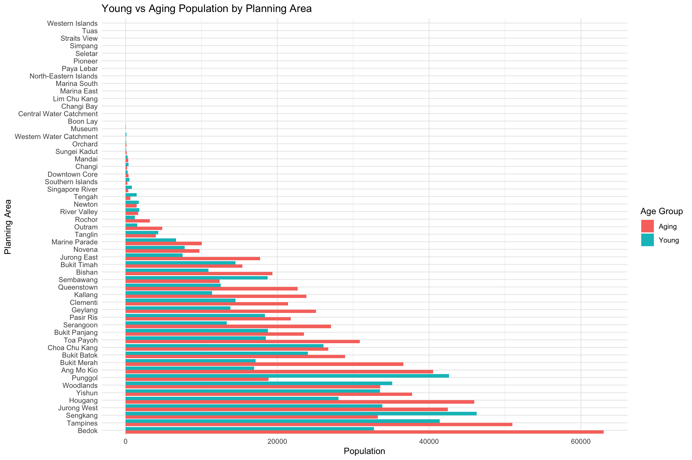

pacman::p_load(tidyverse, ggplot2, dplyr, forcats, ggthemes, patchwork, knitr, gt)Take-home Exercise 1 - Understanding Singapore’s Demographic Landscape: Population Age Structure and Spatial Patterns in 2024
1 Overview
1.1 Background
Singapore’s demographic profile provides critical insights for policy planning, urban development, and resource allocation. The dataset respopagesex2024.csv contains population counts by age, sex, planning area, and subzone, based on Singapore’s official population statistics for 2024. This research aims to uncover key trends in aging, birth rates, and spatial demographic variations using visual analytics.
1.2 The Data
The dataset used is respopagesex2024.csv obtained from the Department of Statistics Singapore. It includes the following fields:
PA: Planning Area
SZ: Subzone
Age: Age in years (0 to 90+)
Sex: Male or Female
Pop: Resident count
Time: Time / Period
1.3 Research Objectives
Using the Singapore Residents by Planning Area / Subzone, Single Year of Age and Sex, June 2024 dataset, this article aims to use appropriate Exploratory Data Analysis (EDA) methods and ggplot2 function to explore:
Areas with pronounced aging patterns and low birth rates
Spatial variation of age distribution across planning areas and regions
2 Loading Packages
The following packages are used for data wrangling and visualization:
tidyverse: A collection of R packages for data science, includingdplyr,ggplot2, and others for data manipulation and visualization.ggplot2: A grammar of graphics for creating static, animated, and interactive data visualizations.dplyr: Provides a set of functions for efficiently manipulating datasets (e.g., filtering, selecting, and summarising).forcats: Tools for working with categorical variables (factors), especially useful for reordering and relabeling.ggthemes: Offers additional themes and scales to improve the aesthetics ofggplot2charts.patchwork: Enables combining multipleggplot2plots into a single layout.knitr: Facilitates dynamic report generation by weaving R code into documents.gt: Used to create elegant tables for display in HTML or markdown reports.
The following code chunk uses p_load () of pacman packages to check if tidyverse packages are installed and can be called into R.
3 Data Preparation
In this section, we will wrangle the data to prepare for analysis and visualization.
3.1 Dataset Overview
Note
This dataset stores “90_and_Over” as a character value in the Age column, we need to clean and convert it to a numeric value to perform age-based analysis. We use 95 as a conservative numeric replacement.
data <- read_csv("Data/respopagesex2024.csv") %>%
mutate(Age = ifelse(Age == "90_and_Over", "95", Age),
Age = as.numeric(Age)) %>%
drop_na(Age)Rows: 60424 Columns: 6
── Column specification ────────────────────────────────────────────────────────
Delimiter: ","
chr (4): PA, SZ, Age, Sex
dbl (2): Pop, Time
ℹ Use `spec()` to retrieve the full column specification for this data.
ℹ Specify the column types or set `show_col_types = FALSE` to quiet this message.The dataset consists of 60,424 rows and 6 columns, representing Singapore’s resident population as of 2024.
A warning was raised when converting the Age column from character to numeric:
Warning
NAs introduced by coercion
This indicates that at least one value in the Age column was non-numeric (e.g., “Total” or “Unknown”), which cannot be coerced to a number and was converted to NA. To ensure accurate analysis, those invalid rows were excluded using drop_na(Age). This step guarantees that only valid age-based population entries are used in further calculations.
3.2 Duplicate Check
sum(duplicated(data))[1] 0data[duplicated(data), ]# A tibble: 0 × 6
# ℹ 6 variables: PA <chr>, SZ <chr>, Age <dbl>, Sex <chr>, Pop <dbl>,
# Time <dbl>Result suggests that there are no fully duplicate rows in this dataset.
After cleaning, 60,424 valid records remain for analysis. No duplicate entries were detected. Non-numeric age entries, likely representing summary rows such as ‘Total’, were excluded.
3.3 Subzone Summary
The code chunk below creates a summary table that shows all subzones belonging to each planning area, displayed cleanly using the gt() package for better readability. It’s useful for understanding the structure and granularity of the geographic data.
grouped <- data %>%
select(PA, SZ) %>%
distinct() %>%
arrange(PA, SZ) %>%
group_by(PA) %>%
summarise(Subzones = paste(SZ, collapse = ", "))
grouped %>%
gt() %>%
tab_header(
title = "Planning Areas and Their Subzones"
)| Planning Areas and Their Subzones | |
|---|---|
| PA | Subzones |
| Ang Mo Kio | Ang Mo Kio Town Centre, Cheng San, Chong Boon, Kebun Bahru, Sembawang Hills, Shangri-La, Tagore, Townsville, Yio Chu Kang, Yio Chu Kang East, Yio Chu Kang North, Yio Chu Kang West |
| Bedok | Bayshore, Bedok North, Bedok Reservoir, Bedok South, Frankel, Kaki Bukit, Kembangan, Siglap |
| Bishan | Bishan East, Marymount, Upper Thomson |
| Boon Lay | Liu Fang, Samulun, Shipyard, Tukang |
| Bukit Batok | Brickworks, Bukit Batok Central, Bukit Batok East, Bukit Batok South, Bukit Batok West, Gombak, Guilin, Hillview, Hong Kah North |
| Bukit Merah | Alexandra Hill, Alexandra North, Bukit Ho Swee, Bukit Merah, City Terminals, Depot Road, Everton Park, Henderson Hill, Kampong Tiong Bahru, Maritime Square, Redhill, Singapore General Hospital, Telok Blangah Drive, Telok Blangah Rise, Telok Blangah Way, Tiong Bahru, Tiong Bahru Station |
| Bukit Panjang | Bangkit, Dairy Farm, Fajar, Jelebu, Nature Reserve, Saujana, Senja |
| Bukit Timah | Anak Bukit, Coronation Road, Farrer Court, Hillcrest, Holland Road, Leedon Park, Swiss Club, Ulu Pandan |
| Central Water Catchment | Central Water Catchment |
| Changi | Changi Airport, Changi Point, Changi West |
| Changi Bay | Changi Bay |
| Choa Chu Kang | Choa Chu Kang Central, Choa Chu Kang North, Keat Hong, Peng Siang, Teck Whye, Yew Tee |
| Clementi | Clementi Central, Clementi North, Clementi West, Clementi Woods, Faber, Pandan, Sunset Way, Toh Tuck, West Coast |
| Downtown Core | Anson, Bayfront Subzone, Bugis, Cecil, Central Subzone, City Hall, Clifford Pier, Marina Centre, Maxwell, Nicoll, Phillip, Raffles Place, Tanjong Pagar |
| Geylang | Aljunied, Geylang East, Kallang Way, Kampong Ubi, Macpherson |
| Hougang | Defu Industrial Park, Hougang Central, Hougang East, Hougang West, Kangkar, Kovan, Lorong Ah Soo, Lorong Halus, Tai Seng, Trafalgar |
| Jurong East | International Business Park, Jurong Gateway, Jurong Port, Jurong River, Lakeside (Business), Lakeside (Leisure), Penjuru Crescent, Teban Gardens, Toh Guan, Yuhua East, Yuhua West |
| Jurong West | Boon Lay Place, Chin Bee, Hong Kah, Jurong West Central, Kian Teck, Safti, Taman Jurong, Wenya, Yunnan |
| Kallang | Bendemeer, Boon Keng, Crawford, Geylang Bahru, Kallang Bahru, Kampong Bugis, Kampong Java, Lavender, Tanjong Rhu |
| Lim Chu Kang | Lim Chu Kang |
| Mandai | Mandai East, Mandai Estate, Mandai West |
| Marina East | Marina East |
| Marina South | Marina South |
| Marine Parade | East Coast, Katong, Marina East (Mp), Marine Parade, Mountbatten |
| Museum | Bras Basah, Dhoby Ghaut, Fort Canning |
| Newton | Cairnhill, Goodwood Park, Istana Negara, Monk's Hill, Newton Circus, Orange Grove |
| North-Eastern Islands | North-Eastern Islands |
| Novena | Balestier, Dunearn, Malcolm, Moulmein, Mount Pleasant |
| Orchard | Boulevard, Somerset, Tanglin |
| Outram | China Square, Chinatown, Pearl's Hill, People's Park |
| Pasir Ris | Flora Drive, Loyang East, Loyang West, Pasir Ris Central, Pasir Ris Drive, Pasir Ris Park, Pasir Ris Wafer Fab Park, Pasir Ris West |
| Paya Lebar | Airport Road, Paya Lebar East, Paya Lebar North, Paya Lebar West, Plab |
| Pioneer | Benoi Sector, Gul Basin, Gul Circle, Joo Koon, Pioneer Sector |
| Punggol | Coney Island, Matilda, Northshore, Punggol Canal, Punggol Field, Punggol Town Centre, Waterway East |
| Queenstown | Commonwealth, Dover, Ghim Moh, Holland Drive, Kent Ridge, Margaret Drive, Mei Chin, National University Of S'pore, One North, Pasir Panjang 1, Pasir Panjang 2, Port, Queensway, Singapore Polytechnic, Tanglin Halt |
| River Valley | Institution Hill, Leonie Hill, One Tree Hill, Oxley, Paterson |
| Rochor | Bencoolen, Farrer Park, Kampong Glam, Little India, Mackenzie, Mount Emily, Rochor Canal, Selegie, Sungei Road, Victoria |
| Seletar | Pulau Punggol Barat, Pulau Punggol Timor, Seletar, Seletar Aerospace Park |
| Sembawang | Admiralty, Sembawang Central, Sembawang East, Sembawang North, Sembawang Springs, Sembawang Straits, Senoko North, Senoko South, The Wharves |
| Sengkang | Anchorvale, Compassvale, Fernvale, Lorong Halus North, Rivervale, Sengkang Town Centre, Sengkang West |
| Serangoon | Lorong Chuan, Seletar Hills, Serangoon Central, Serangoon Garden, Serangoon North, Serangoon North Ind Estate, Upper Paya Lebar |
| Simpang | Pulau Seletar, Simpang North, Simpang South, Tanjong Irau |
| Singapore River | Boat Quay, Clarke Quay, Robertson Quay |
| Southern Islands | Sentosa, Southern Group |
| Straits View | Straits View |
| Sungei Kadut | Gali Batu, Kranji, Pang Sua, Reservoir View, Turf Club |
| Tampines | Simei, Tampines East, Tampines North, Tampines West, Xilin |
| Tanglin | Chatsworth, Nassim, Ridout, Tyersall |
| Tengah | Brickland, Forest Hill, Garden, Park, Plantation, Tengah Industrial Estate |
| Toa Payoh | Bidadari, Boon Teck, Braddell, Joo Seng, Kim Keat, Lorong 8 Toa Payoh, Pei Chun, Potong Pasir, Sennett, Toa Payoh Central, Toa Payoh West, Woodleigh |
| Tuas | Tengeh, Tuas Bay, Tuas North, Tuas Promenade, Tuas View, Tuas View Extension |
| Western Islands | Jurong Island And Bukom, Semakau, Sudong |
| Western Water Catchment | Bahar, Cleantech, Murai |
| Woodlands | Greenwood Park, Midview, North Coast, Senoko West, Woodgrove, Woodlands East, Woodlands Regional Centre, Woodlands South, Woodlands West |
| Yishun | Khatib, Lower Seletar, Nee Soon, Northland, Springleaf, Yishun Central, Yishun East, Yishun South, Yishun West |
4 Exploratory Data Analysis
4.1 Age-Sex Pyramid
This population pyramid visualizes the age and gender distribution. Males are plotted on the left and females on the right, highlighting the dependency load and gender imbalance at older ages.
pyramid_data <- data %>%
group_by(Age, Sex) %>%
summarise(Pop = sum(Pop), .groups = "drop") %>%
mutate(Pop = if_else(Sex == "Males", -Pop, Pop))
pyramid_plot <- ggplot(pyramid_data, aes(x = Age, y = Pop, fill = Sex)) +
geom_bar(stat = "identity", width = 1) +
coord_flip() +
scale_y_continuous(labels = abs) +
labs(title = "Singapore Resident Population Pyramid (2024)",
x = "Age", y = "Population") +
theme_minimal()
pyramid_plotObservations:
A bulge around ages 30–50 suggests a dominant working-age population.
Females dominate in ages 80+, reflecting higher life expectancy.
Lower base suggests declining birth rates.
4.2 Birth Rate and Aging Population
To better understand the spatial dynamics of population aging, we compared the total population of the young group (aged 0–14) and the aging group (aged 65 and above) across Singapore’s Planning Areas (PAs). This analysis highlights demographic imbalances by region, identifying areas where the elderly population significantly exceeds the youth population, and vice versa.
age_groups <- data %>%
filter(Age <= 14 | Age >= 65) %>%
mutate(group = case_when(
Age <= 14 ~ "Young",
Age >= 65 ~ "Aging"
)) %>%
group_by(PA, group) %>%
summarise(total_pop = sum(Pop), .groups = "drop")
ggplot(age_groups, aes(x = reorder(PA, -total_pop), y = total_pop, fill = group)) +
geom_col(position = "dodge") +
coord_flip() +
labs(title = "Young vs Aging Population by Planning Area",
x = "Planning Area", y = "Population", fill = "Age Group") +
theme_minimal()
We refine the visualization by focusing on the top 20 Planning Areas with the highest combined population of young (aged 0–14) and elderly (aged 65 and above) residents. The top_pa object identifies these most populous areas based on total demographic burden, while top_age_groups filters the dataset accordingly to ensure that only these selected Planning Areas are included in the plot for clearer comparison.
top_pa <- age_groups %>%
group_by(PA) %>%
summarise(total = sum(total_pop)) %>%
arrange(desc(total)) %>%
slice_head(n = 20) # select top 20
top_age_groups <- age_groups %>%
filter(PA %in% top_pa$PA)
# Step 1: Define the order (e.g. by total population descending)
pa_order <- top_age_groups %>%
group_by(PA) %>%
summarise(total = sum(total_pop)) %>%
arrange(desc(total)) %>%
pull(PA)
# Step 2: Apply the same factor levels
top_age_groups <- top_age_groups %>%
mutate(PA = factor(PA, levels = pa_order))
ratio_data <- age_groups %>%
filter(PA %in% top_pa$PA) %>%
pivot_wider(names_from = group, values_from = total_pop) %>%
mutate(ratio = Aging / Young) %>%
filter(!is.na(PA)) %>% # Remove NAs
mutate(PA = factor(PA, levels = pa_order))
# Top bar chart
bar_plot <- ggplot(top_age_groups, aes(x = total_pop, y = fct_rev(PA), fill = group)) +
geom_col(position = "dodge") +
labs(x = "Population", y = NULL, fill = "Age Group") +
theme_minimal()
# Bottom line chart with consistent PA order
line_plot <- ggplot(ratio_data, aes(x = PA, y = ratio)) +
geom_point(size = 3, color = "black") +
geom_line(aes(group = 1), color = "black") +
labs(x = "Planning Area", y = "Aging / Young Ratio") +
theme_minimal() +
theme(axis.text.x = element_text(angle = 45, hjust = 1))
# Combine them
(bar_plot / line_plot) + plot_layout(heights = c(2, 1)) +
plot_annotation(title = "Population Distribution and Aging Ratio by Planning Area")
Tip
To enlarge the graph for better readability, we can increase the figure width and height:
fig.width=12→ makes the chart widerfig.height=8→ gives enough vertical space for stacked or combined plots
Both plots use consistent PA ordering for easier comparison.
Aging-Heavy Areas: these planning areas have a high Aging-to-Young ratio, meaning significantly more elderly (65+) than young residents (0–14):
Ang Mo Kio has the highest aging ratio (above 2.0) despite moderate total population — indicating a strongly aging population.
Bukit Merah and Queenstown also exhibit high aging ratios with noticeably lower young population bars. These are classic mature estates with older residents aging in place.
Bedok and Toa Payoh show both large elderly populations and high aging ratios.
Youth-Dense Areas:
Punggol has the lowest aging ratio (under 0.5) and a visibly dominant young population bar — a clear sign of a family-oriented, younger estate.
Sengkang and Tampines also have low aging ratios and high young populations, suggesting they are popular for younger families.
Jurong West and Woodlands show balanced profiles but still lean younger compared to the national median.
4.3 Age Distribution by Region Type
To examine regional differences in demographic structure, a boxplot was generated to illustrate the distribution of resident ages across Singapore’s various region types, as defined by their respective Planning Areas.
The Urban Authority of Singapore (URA) has categorized Singapore into 5 regions for urban planning purposes, namely Central Region, North Region, North-East Region, East Region and West Region.
By aligning Planning Areas with these official region classifications, the analysis enables a clearer understanding of age-related demographic patterns across the island.
expanded_data <- data %>%
filter(!is.na(PA)) %>%
mutate(Age = ifelse(Age == "90_and_Over", "95", Age),
Age = as.numeric(Age)) %>%
filter(!is.na(Age)) %>%
mutate(PA = str_trim(PA)) %>%
mutate(region_type = case_when(
# Core Central Region
PA %in% c("Downtown Core", "Outram", "Sentosa", "Rochor", "Orchard", "Newton",
"River Valley", "Bukit Timah", "Holland Road", "Tanglin", "Novena", "Thomson") ~ "Core Central Region",
# Rest of Central Region
PA %in% c("Bishan", "Bukit Merah", "Geylang", "Kallang", "Marine Parade", "Queenstown", "Southern Islands", "Toa Payoh") ~ "Rest of Central Region",
# North Region
PA %in% c("Central Water Catchment", "Lim Chu Kang", "Mandai", "Sembawang", "Simpang", "Sungei Kadut", "Woodlands", "Yishun") ~ "North Region",
# North-East Region
PA %in% c("Ang Mo Kio", "Hougang", "North-Eastern Islands", "Punggol", "Seletar",
"Sengkang", "Serangoon") ~ "North-East Region",
# East Region
PA %in% c("Bedok", "Changi", "Changi Bay", "Paya Lebar", "Pasir Ris", "Tampines") ~ "East Region",
# West Region
PA %in% c("Bukit Batok", "Bukit Panjang", "Boon Lay", "Pioneer", "Choa Chu Kang", "Clementi", "Jurong East", "Jurong West", "Tengah", "Tuas", "Western Islands", "Western Water Catchment") ~ "West Region",
TRUE ~ NA_character_
)) %>%
filter(!is.na(region_type)) %>%
uncount(weights = Pop)
p1 <- ggplot(expanded_data, aes(x = region_type, y = Age, fill = region_type)) +
geom_boxplot() +
labs(title = "Age Distribution by Region Type", x = "Region", y = "Age") +
theme_minimal() +
coord_flip()
p2 <- ggplot(expanded_data, aes(x = Age, y = fct_reorder(PA, Age), fill = region_type)) +
geom_boxplot() +
facet_wrap(~ region_type, scales = "free_y") +
labs(
title = "Age Distribution by Planning Area and Region",
x = "Age",
y = "Planning Area"
) +
theme_minimal()
p1 / p2 +
plot_annotation(title = "Overview: Regional and Planning Area Age Distribution")From Age Distribution by Region Type figure, we can observe that overall age distribution is similar. All regions have interquartile ranges (IQRs) roughly between 25 and 65 years. Core Central Region has a slightly wider IQR; median age around mid-40s. East Region has a slightly lower median than others. North Region & North-East Region have similar median and IQR (~25–65), slightly lower upper quartile, possibly reflects more family-centric, middle-aged population. West Region also has a broad IQR with no extreme values. No region shows a highly youth-dominant or elderly-dominant skew in isolation.
From the Age Distribution by Planing Area and Region figure, we can observe notable outlines in the plots.
North-East Region – Seletar: Has multiple high outliers (above age 80+), despite a narrow IQR.
West Region – Tengah: Displays a string of high outliers, unusually concentrated near 85–90. Tengah is a newly developing area, so this is surprising.
Core Central Region – Downtown Core, Outram, Newton: Outliers at both very low and very high ages, which reflects age-diverse.
5 Summary
Singapore’s 2024 demographic landscape is defined by a mature population with a strong working-age core, declining birth rates, and regional variance in aging patterns. Aging is concentrated in older housing estates, while younger families cluster in newer towns like Punggol and Sengkang.
6 References
- Department of Statistics Singapore. (2024). Resident Population by Age, Sex and Planning Area/Subzone. https://www.singstat.gov.sg/
- Wikipedia contributors. (2024). Regions of Singapore. https://en.wikipedia.org/wiki/Regions_of_Singaporehttps://en.wikipedia.org/wiki/Regions_of_Singapore